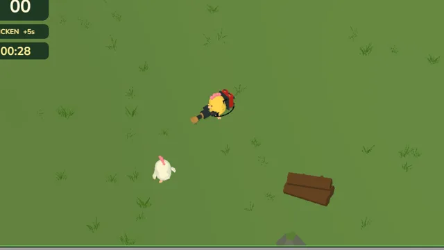
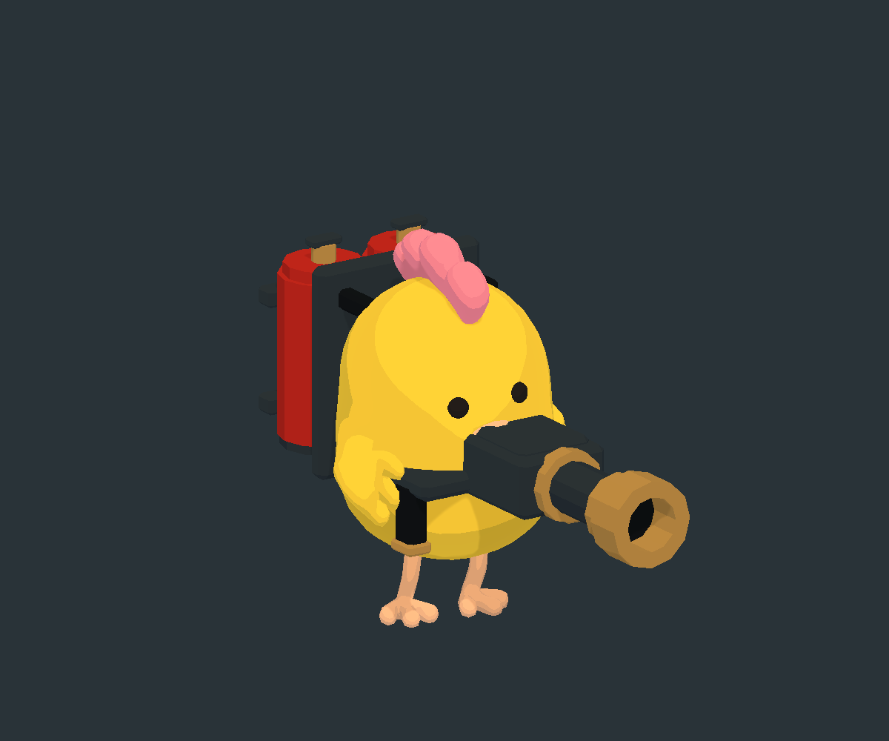
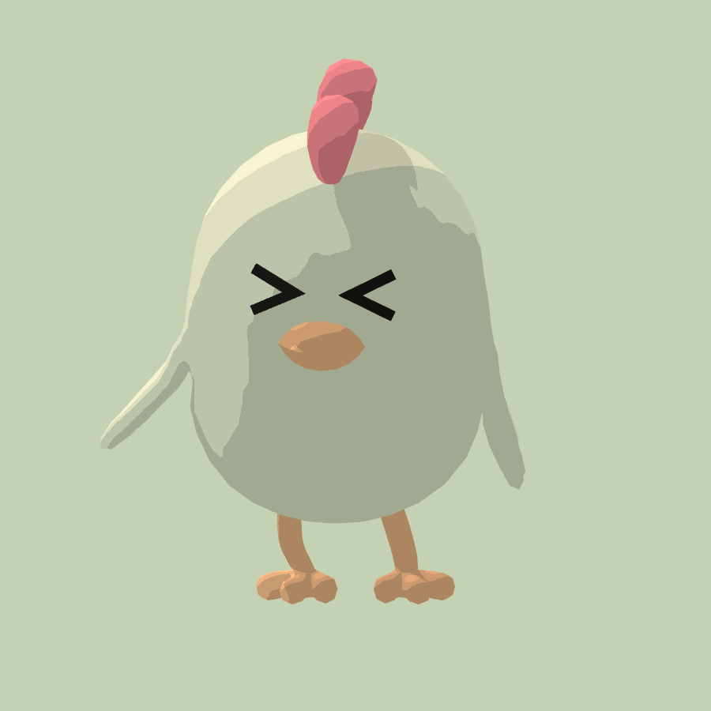
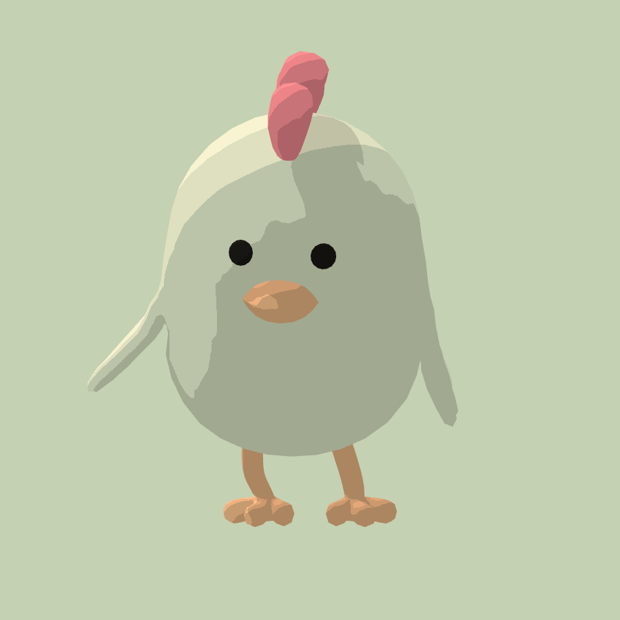
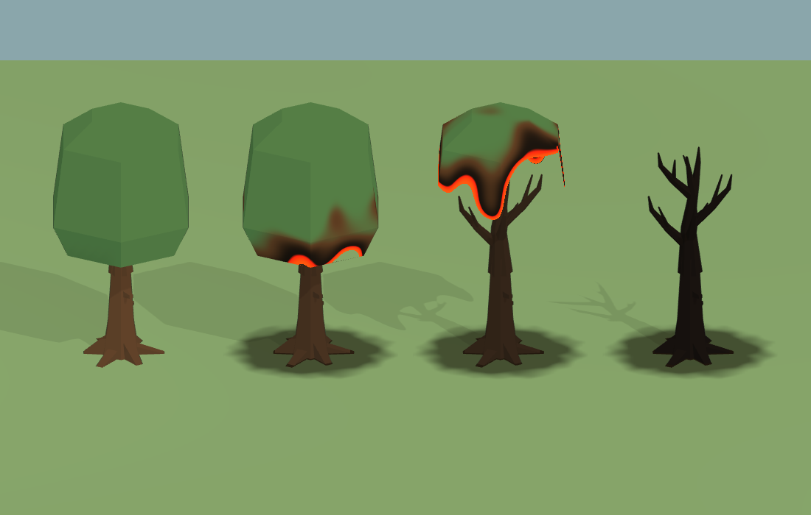
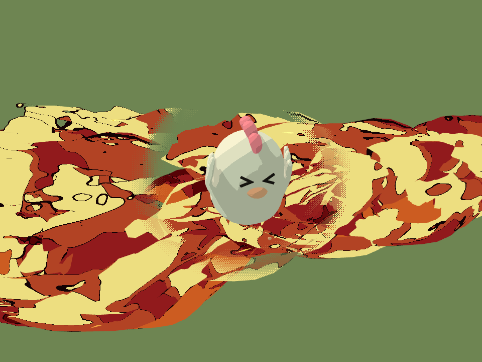

Chicken Fire는 화염방사기를 멘 닭이 목장 아레나에서 시간과 싸우는 PC 웹 게임입니다. 1인 개발이고 정식 출시하지 않은 시제품(프로토타입)입니다. 갤러리에서 웹 빌드로 해 볼 수 있습니다. 이 문서는 무엇을 왜 그렇게 설계했는지를 적은 기획서입니다. 숫자는 설계 결정을 보여 줄 때만 씁니다. 의도는 작업 메모, 계획서, 코드 주석에 적힌 이유만 옮겼습니다. 이유가 기록에 없는 곳은 (의도 기록 없음)이라고 표시했습니다. 규칙과 수치는 게임 코드와 장면 데이터에서 확인했고 메모와 코드가 다르면 코드를 따랐습니다. 기준은 2026-10-11 보관본입니다.
1. 개요
핵심 컨셉

플레이어는 연료 가방과 화염방사기를 멘 노란 닭입니다. 40 × 40 m 목장 아레나를 위에서 비스듬히 내려다보는 쿼터뷰로 움직입니다. 하얀 닭을 불로 태우면 그 자리에 치킨통이 떨어지고 치킨통을 먹으면 남은 시간이 늘어납니다. 남은 시간은 30초에서 시작해 계속 줄어듭니다. 시간이 0이 되면 한 판이 끝나고 먹은 치킨 수가 점수가 됩니다. 불은 작물, 나무, 장작더미로 옮겨붙어 목장이 점점 타 들어갑니다.
대상 플레이어
| 누구 | 근거 |
|---|---|
| 키보드와 마우스로 하는 PC 플레이어 | 조작이 WASD 이동, 마우스 조준, 왼쪽 버튼 발사뿐입니다. 터치·게임패드 조작은 없습니다 |
| 짧게 한 판씩 하는 사람 | 한 판이 30초에서 시작하고, 끝나면 버튼 하나로 바로 다시 합니다 |
대상 플레이어를 따로 정한 기록은 없습니다(의도 기록 없음). 위 표는 실제 조작과 규칙에서 읽은 것입니다.
차별점 (USP)
항목마다 빼면 무엇이 남는지 따져 보았습니다. USP는 Unique Selling Point의 줄임말입니다.
| # | 차별점 | 빼면? |
|---|---|---|
| 1 | 사냥감이 곧 시간: 태운 닭이 치킨통이 되고, 먹어야 시간이 늘어남 | 점수만 쌓는 사격 게임이 됩니다. 시간과 싸우는 긴장이 사라집니다 |
| 2 | 번지는 불: 작물·나무·장작더미에 불이 옮겨붙고 탄 자국이 한 판 내내 남음 | 불이 그냥 총알이 됩니다. 목장이 변해 가는 모습이 없어집니다 |
| 3 | 슬랩스틱 닭 반응: 맞으면 > < 눈으로 놀라 날개를 퍼덕이며 도망 | 맞았는지 화면에서 바로 읽기 어렵습니다 |
차별점을 이렇게 셋으로 정리한 기록은 없습니다(의도 기록 없음). 각 항목은 실제로 만든 시스템입니다.
출처: README.txt 구현된 내용, Workspace_Notes.txt, 라운드·난이도 코드, 게임 장면 데이터
2. 목표와 배경
기획 배경
- 출발점: 불 효과를 따로 시험하던 프로젝트(FirePreview)의 화염방사기 효과를 가져와 2026-10-09에 새 프로젝트로 시작했습니다.
- 환경 방향: 작업 메모의 첫 제안은 작은 농장 마당, 쿼터뷰, 낮은 채도의 잔디와 흙, 그리고 눈에 잘 띄는 닭과 불꽃이었습니다. 불붙는 대상은 상자·울타리·작물 중 몇 개로 시작해 연쇄 점화를 확인하기로 했습니다.
- 첫 시제품: 플레이어 주변 구역을 계속 만들어 끝없이 이어지는 농장이었습니다. 불탄 상태를 구역별로 저장해 돌아와도 그대로 남게 했습니다.
- 아레나로 바꿈: 마지막 이틀 동안 끝없는 농장을 손으로 배치한 40 × 40 m 아레나로 바꾸고 생존 라운드와 게임 종료 화면을 넣었습니다. 아레나는 아무것도 저장하지 않아 매 판이 새로 시작합니다. 끝없는 농장을 버리고 닫힌 아레나로 간 이유는 기록에 없습니다(의도 기록 없음).
프로젝트 목표
| # | 목표 | 확인 방법 · 결과 |
|---|---|---|
| G1 | 불을 뿜고 번지게 하는 놀이를 만든다 | 화염방사기, 점화, 불 번짐, 탄 자국 (4·5장) |
| G2 | 그 놀이를 한 판짜리 생존 게임으로 묶는다 | 30초 타이머, 치킨통으로 시간 늘리기, 게임 종료 화면 (3·5장) |
| G3 | 웹에서 돌아가게 한다 | 웹 빌드 설정까지 마침. 갤러리에서 플레이 가능 (10장) |
위 목표는 만들어진 결과에서 정리한 것이고 목표 문장이 기록에 따로 있지는 않습니다(의도 기록 없음). 수치 목표도 없습니다.
출처: Workspace_Notes.txt, README.txt, ARCHIVE_INFO.txt, 아레나 배치 코드 주석
3. 핵심 게임플레이
디자인 기둥
기둥의 우선순위를 정한 기록은 없습니다(의도 기록 없음). 아래 순위는 만들어진 순서(불 → 닭 반응 → 생존 라운드)를 따랐습니다.
| 순위 | 기둥 | 뜻 | 근거 |
|---|---|---|---|
| 1 | 불을 뿜는 손맛 | 쏘고, 맞히고, 번지는 감각이 재미의 중심 | README.txt 점화·전파, 작업 메모 "연쇄 점화를 확인" |
| 2 | 한눈에 읽히는 닭 | 작은 쿼터뷰 화면에서도 닭과 불, 닭의 반응이 바로 보임 | 작업 메모 "눈에 잘 띄는 닭/불꽃", 표정 계획 "게임 카메라에서 읽히는지를 우선" |
| 3 | 시간과의 경주 | 계속 먹어야 버티고, 결국 시계가 이김 | 난이도 코드 주석 "시계가 이길 때까지 점점 더 많이 먹어야 한다" |
핵심 루프 (코어 루프)
[행동] 닭을 조준하고 왼쪽 버튼으로 불을 뿜는다
↓
[반응] 닭이 > < 눈으로 놀라 도망침 · 지글지글 소리
약 1.4초 맞으면 펑 · 치킨통이 떨어짐
근처 작물과 나무에 불이 번짐
↓
[보상] 치킨통을 먹음 · 바삭 소리
남은 시간 +5초 (갈수록 +1초까지 줄어듦)
↓
[다시 할 이유] 시간이 계속 줄어 다음 닭을 찾아야 함
30초마다 보상이 줄어 더 많이 먹어야 함
끝나면 PLAY AGAIN 한 번에 다시
| 항목 | 내용 |
|---|---|
| 한 판 길이 | 측정 기록 없음. 하나도 못 먹으면 30초. 2분이 지나면 한 마리가 1초뿐이라 버티기가 급격히 어려워짐 |
| 판마다 달라지는 것 | 닭이 나오는 자리(플레이어에게서 6~16 m 떨어진 빈 곳), 닭마다 다른 성격과 속도, 불이 번진 모양 |
| 판마다 같은 것 | 아레나 배치, 시작 시간, 보상이 줄어드는 시점 |
승리와 실패
- 승리는 없습니다. 시간이 다 되기 전까지 얼마나 많이 먹는지 겨룹니다.
- 실패: 남은 시간이 0이 되면 끝납니다. 닭은 플레이어를 공격하지 않으므로 체력이나 목숨은 없습니다.
- 끝나는 순간 조작과 불이 멈추고 시간 종료 징글이 울린 뒤 1초 있다가 게임 종료 화면이 나옵니다. 이 1초는 징글이 다 들리게 하려는 것입니다(코드 주석).
- 최고 기록은 저장하지 않습니다. 매 판이 처음 상태에서 시작합니다(아레나 코드 주석 "매 라운드가 새로 시작").
출처: 라운드·난이도·게임 종료 코드와 주석, Workspace_Notes.txt, EnemyBurnEyesPlan.txt
4. 메카닉
플레이어의 동사
| 동사 | 하는 일 | 받치는 기둥 |
|---|---|---|
| 움직이기 | 화면 방향 기준으로 걷기. 조준과 따로 움직여 뒷걸음질도 됨 | 3 시간과의 경주 |
| 조준하기 | 마우스가 가리키는 땅 쪽으로 몸을 돌림 | 1 손맛 |
| 불 뿜기 | 왼쪽 버튼을 누르는 동안 불이 나감. 닭을 태우고 물건에 불을 붙임 | 1 손맛 |
| 먹기 | 치킨통에 가까이 가면 자동으로 먹음. 남은 시간이 늘어남 | 3 시간과의 경주 |
먹기에 따로 버튼이 없는 이유는 기록에 없습니다(의도 기록 없음).
조작
| 하고 싶은 것 | 키보드 · 마우스 |
|---|---|
| 이동 | W A S D (화면 기준) |
| 조준 | 마우스 위치 |
| 불 뿜기 | 왼쪽 버튼 누르고 있기 |
| 확대 · 축소 | 마우스 휠 |
| 설정 열기 · 닫기 | 오른쪽 위 톱니 버튼, ESC |
| 다시 하기 | 게임 종료 화면의 PLAY AGAIN 버튼, Enter |
버튼이나 설정 창 위에서 누른 클릭으로는 불이 나가지 않습니다. 게임 창이 선택되어 있을 때만 발사합니다.
접근성 (실제로 넣은 것)
- 가려진 닭 보이기: 불꽃이나 건물이 닭을 가리면 닭 둘레에 둥근 창이 뚫려 닭이 보입니다. 작업 메모는 쿼터뷰 앞쪽에 캐릭터를 가리는 높은 물체를 줄이자고 했습니다.
- 색에만 기대지 않는 시간 경고: 10초 이하가 되면 숫자 색이 바뀌고 1초마다 똑딱 소리가 납니다.
- 맞았다는 표시: 맞은 닭은 아주 짧게 빨갛게 깜빡이고, 눈이 > < 로 바뀌고, 지글지글 소리가 납니다.
- 소리: 전체 음량과 효과음 음량을 따로 조절하고 소리를 끌 수 있습니다. 값은 다음에 열어도 남습니다.
- 멈춤: 설정 창을 열면 게임이 멈추고 소리가 작아집니다.
- 확대 · 축소: 마우스 휠로 화면 크기를 바꿉니다.
- 조작 키 바꾸기, 난이도 선택, 한국어 화면은 없습니다(의도 기록 없음). 화면 글자는 영어입니다.
출처: 플레이어 조작·설정 창·소리·화면 표시 코드, Workspace_Notes.txt, EnemyOcclusionWindowResults.txt
5. 아레나 생존 설계
적 닭의 행동


| 상태 | 하는 일 |
|---|---|
| 돌아다니기 | 플레이어가 멀면 처음 나온 자리 근처를 어슬렁거림 |
| 다가오기 | 플레이어가 7.5~13.5 m 안에 들어오면(닭마다 다름) 다가와서 2.3~4.1 m 거리를 두고 옆으로 돌아 들어옴 |
| 성격 셋 | 가까이 붙어 천천히 맴도는 닭, 거리를 두고 크게 맴도는 닭, 너무 가까우면 물러서는 닭이 번갈아 나옴 |
| 놀람 → 도망 → 회복 | 불에 맞으면 0.2초 움찔하고 불 반대쪽으로 2배 빠르게 도망침. 마지막으로 맞고 2초 뒤 0.3초 동안 멈춰 숨을 고르고 평소로 돌아옴 |
| 쓰러짐 | 체력이 다하면 펑 소리와 함께 사라지고 그 자리에 치킨통이 떨어짐 |
- 닭은 공격하지 않습니다. 애니메이션 계획에 쪼기 공격과 피격 판정이 다음 작업으로 적혀 있지만 만들지 않았습니다(11장).
- 닭끼리 너무 붙으면 서로 밀어냅니다. 한 무리가 같은 길이나 문으로 몰려 겹치지 않게 하려는 것입니다(코드 주석).
- 도망은 날지 않고 땅을 박차며 뛰는 동작으로 만들었습니다. 참고 그림 지시문은 아프거나 탄 모습 없이 장난스러운 만화 슬랩스틱 분위기를 요구했습니다.
- 표정 계획의 목표는 불에 맞은 닭이 눈을 > < 로 꽉 감아 뜨겁고 당황한 느낌을 주는 것이었습니다. 다시 맞아도 표정은 깜빡이지 않고 회복할 때 원래 눈으로 돌아옵니다.
라운드 · 타이머 · 점수 규칙
| 규칙 | 내용 |
|---|---|
| 시작 | 아레나 물건이 다 놓이면 30초부터 줄어들기 시작 |
| 시간 늘리기 | 치킨통 하나를 먹을 때마다 +5초. 30초마다 1초씩 줄어 2분부터는 +1초 |
| 점수 | 먹은 치킨 수. 태운 수가 아니라 먹은 수만 셈 |
| 치킨통 | 쓰러진 자리에 0.28초 동안 커지며 나타난 뒤부터 먹을 수 있음. 25초 동안 안 먹으면 사라짐 |
| 먹는 거리 | 치킨통 1.1 m 안에 들어가면 자동으로 먹음 |
| 끝 | 남은 시간 0 → 조작·발사 멈춤 → 1초 뒤 게임 종료 화면 |
화면 왼쪽 위에는 먹은 수, 지금 한 마리당 몇 초인지(1 CHICKEN +5s), 남은 시간이 차례로 있습니다. 보상이 줄어드는 순간 화면 위 가운데에 REWARD DOWN! 알림이 2초쯤 뜨고 짧은 소리가 납니다.
불 번짐
| 대상 | 불에 탐? | 탄 뒤 |
|---|---|---|
| 밀 · 옥수수 · 호박 · 풀숲 · 장작더미 | 탐 | 검게 그을리고 바닥에 탄 자국 |
| 참나무 | 탐 | 잎이 타 들어가 사라지고 검은 가지만 남음 |
| 헛간 · 사일로 · 닭장 · 우물 · 물탱크 · 바위 | 안 탐 | 그대로 |
| 울타리(아레나 경계) | 안 탐 | 그대로 |
- 불길은 약 5.8 m까지 나가고 멀어질수록 넓어집니다. 벽이나 바위 뒤는 불이 닿지 않습니다.
- 불길에 닿은 물건은 0.4초쯤이면 불이 붙습니다. 타는 물건은 6초 동안 타고 2.4 m 안의 다른 물건을 데워 불을 옮깁니다.
- 다 탄 물건은 다시 타지 않습니다. 한 판 동안 탄 자국이 그대로 남아 목장이 점점 검게 변합니다.
- 건물과 바위는 길잡이와 엄폐물이라서 타지 않게 했습니다(코드 주석).
- 물건에 붙은 불은 닭에게 피해를 주지 않습니다. 닭은 화염방사기 불길에 직접 맞아야만 다칩니다(의도 기록 없음).

출처: 적 행동·라운드·난이도·불 번짐 코드와 주석, 게임 장면 데이터, EnemyPanicPlan.txt, EnemyPanicReferencePrompt.txt, EnemyBurnEyesPlan.txt, AnimationPlan.txt, TreeBurnProgress.txt
6. 진행과 밸런스
진행 방식
한 판 안에서 시간이 흐르는 것만이 진행입니다. 레벨, 성장, 해금은 없습니다. 판과 판 사이에 이어지는 것은 소리 설정뿐입니다.
난이도 곡선: 30초마다 한 계단
| 지난 시간 | 1마리당 보상 | 한꺼번에 있는 닭 | 쓰러진 닭이 다시 나오기까지 |
|---|---|---|---|
| 0초~ | +5초 | 6마리 | 8초 |
| 30초~ | +4초 | 8마리 | 6초 |
| 60초~ | +3초 | 10마리 | 5초 |
| 90초~ | +2초 | 12마리 | 4초 |
| 120초~ | +1초 | 12마리 | 4초 |
- 설계 의도: 닭을 잡는 일은 계속 쉽게 두고 치킨통 하나의 가치를 줄입니다. 그러면 플레이어는 따라가려고 점점 더 많이 먹어야 하고 결국 시계가 이깁니다. 닭 수를 늘리고 다시 나오는 시간을 줄이는 것은 먹을 닭이 모자라지 않게 하려는 것입니다(난이도 코드 주석).
- 값은 중간을 섞지 않고 계단처럼 한 번에 바뀝니다. 계단이 내려갈 때만 알림을 띄웁니다.
수치와 그 의미
| 수치 | 값 | 설계에서 하는 일 |
|---|---|---|
| 닭을 쓰러뜨리는 시간 | 불을 계속 맞히면 약 1.4초 | 한 번 훑어서는 안 죽고 잠깐 따라가며 맞혀야 함 |
| 플레이어 속도 · 닭 속도 | 플레이어 3.4 m/s, 닭 평소 1.3 m/s, 도망칠 때 2.6 m/s (닭마다 0.78~1.25배) | 도망치는 닭도 대부분 따라잡을 수 있음(의도 기록 없음) |
| 플레이어 걷기 속도를 낮춤 | 처음 6 → 3.4 | 예전에는 빠른 이동에 고정된 달리기 동작을 써서 닭이 나는 것처럼 보였음. 달리기를 걷기로 바꾸고 재생 속도를 실제 이동에 맞춤. 3.4로 정한 이유는 기록 없음 |
| 닭이 나오는 거리 | 플레이어에게서 6~16 m | 바로 옆에서 튀어나오지 않고 화면 근처에서 나타남(의도 기록 없음) |
| 치킨통 유지 | 25초 | 늦게 가면 시간 보상을 잃음(의도 기록 없음) |
경제
게임 안 경제는 없습니다. 화폐, 상점, 강화가 없고 남은 시간이 유일한 자원입니다. 보상은 남은 시간과 먹은 수, 그리고 바삭 소리와 시간 추가 효과뿐입니다.
밸런스의 한계
위 수치를 플레이 테스트로 맞춘 기록은 없습니다. 한 판이 보통 얼마나 가는지, 몇 마리를 먹는지도 재지 않았습니다. 성능도 정식으로 측정하지 않았습니다(README.txt "FPS/GPU 성능을 정식 벤치마크한 결과는 아닙니다").
출처: 난이도·적 행동·라운드 코드와 주석, 게임 장면 데이터, AnimationPlan.txt, MeadowUpdate.txt, README.txt 검증
7. 아레나 디자인 원칙
구역

아레나는 40 × 40 m 정사각형이고 울타리 32개와 보이지 않는 벽 4면으로 둘러싸여 있습니다. 소품 134개를 손으로 배치했습니다.
| 구역 | 놓인 것 | 불에 탐? |
|---|---|---|
| 북쪽 헛간 마당 | 헛간, 사일로, 물탱크, 장작더미 2 | 장작더미만 |
| 북동쪽 밀밭 | 밀 36 | 전부 |
| 동쪽 호박밭 | 호박 20 | 전부 |
| 남동쪽 참나무 숲 | 참나무 8, 풀숲 6 | 전부 |
| 남서쪽 닭장과 우물 | 닭장 2, 우물, 바위 3, 장작더미 2 | 장작더미만 |
| 서쪽 옥수수밭 | 옥수수 24 | 전부 |
| 곳곳의 엄폐물 | 참나무 4, 풀숲 18, 바위 3, 장작더미 2 | 바위 빼고 전부 |
탈 수 있는 소품은 122개, 타지 않는 소품은 12개입니다.
설계 원칙 (실제로 지킨 것)
- 건물은 가장자리에, 가운데는 싸우는 곳으로. 작업 메모의 첫 장면 제안은 가장자리에 건물 1~2채와 나무를 두고 가운데를 전투 공간으로 비우는 것이었습니다. 아레나도 헛간·사일로·물탱크·닭장·우물을 가운데에서 10~16 m 떨어진 가장자리 쪽에 두었고 플레이어는 가운데에서 시작합니다.
- 타지 않는 것은 길잡이와 엄폐물. 건물과 바위는 타지 않게 해서 판 끝까지 위치를 알려 주는 기준이 됩니다(코드 주석).
- 잘 타는 것은 무리 지어. 작물은 밭 단위로 모여 있어 한 곳에 불이 붙으면 줄줄이 번집니다. 밭 단위로 모은 이유는 기록에 없습니다(의도 기록 없음).
- 캐릭터를 가리지 않기. 작업 메모는 쿼터뷰 앞쪽에 높은 나무나 지붕을 줄여 캐릭터를 가리지 않게 하자고 했습니다. 닭이 불꽃이나 건물에 가려지면 둥근 창으로 보이게 하는 기능도 넣었습니다.
- 매 판 같은 판. 배치는 고정이고 아무것도 저장하지 않습니다. 다시 하면 탄 자국 없이 처음 목장으로 돌아갑니다.
출처: 게임 장면 데이터(구역·소품 수), 아레나 배치 코드 주석, Workspace_Notes.txt 첫 장면 제안, EnemyOcclusionWindowResults.txt
8. 아트와 사운드 방향
아트
| 결정 | 내용 | 의도 |
|---|---|---|
| 카메라 | 위에서 비스듬히 내려다보는 쿼터뷰, 원근 없음 | 작업 메모의 첫 환경 제안 |
| 색 | 낮은 채도의 잔디와 흙, 눈에 띄는 노란 닭·하얀 닭·주황 불꽃 | 작업 메모 "눈에 잘 띄는 닭/불꽃" |
| 카툰 렌더링 | 3단 명암, 따뜻한 밝은 면과 푸른 그림자 | (의도 기록 없음) |
| 외곽선 | 캐릭터·장비·치킨통은 짙은 자줏빛 갈색 굵은 선, 나무·바위·건물은 옅은 녹색 얇은 선, 풀과 바닥은 선 없음 | (의도 기록 없음) |
| 플레이어 장비 | 빨간 쌍연료통 가방, 짙은 회색 화염방사기, 둘을 잇는 호스. 양 날개로 총을 쥠 | 장비 다시 그리기 참고 그림 지시문: 둥근 닭이 짧은 날개로 직접 쥔 모습, 작은 기계 장식 없이 큰 형태 |
| 치킨통 | 빨간 줄무늬 통에 닭다리 7개 | (의도 기록 없음) |
| 풀 | 바람에 흔들리는 풀을 바닥 전체에 깔기 | (의도 기록 없음) |
닭 모델은 외부 에셋(Chickensoft 마스코트)을 쓰고 화염방사기·연료 가방·치킨통·불타는 참나무·걷기와 도망 동작은 Blender로 직접 만들었습니다. 작업 메모는 기본 건물과 자연물은 외부 에셋을 쓰고 Blender는 닭장·화염방사기·탄 잔해처럼 꼭 필요한 것에만 쓰자고 했습니다.
사운드
| 결정 | 내용 | 의도 |
|---|---|---|
| 화염방사기 | 켤 때 점화음, 누르는 동안 토치 소리 반복, 뗄 때 꺼지는 소리. 불이 물체에 닿으면 지글지글 | (의도 기록 없음) |
| 닭 | 맞으면 놀란 울음, 도망치는 동안 꼬꼬댁 소리, 쓰러질 때 비명과 펑 | (의도 기록 없음) |
| 불 번짐 | 물건에 불이 붙을 때 점화음, 타는 동안 장작 타는 소리 | (의도 기록 없음) |
| 시간 | 먹으면 바삭 소리 뒤에 차임, 10초 이하 1초마다 똑딱, 끝나면 짧은 징글 | 징글이 끝까지 들리도록 다른 소리는 1초에 걸쳐 줄이고 게임 종료 화면은 1초 뒤에 띄움(코드 주석) |
| 설정 창 | 열려 있는 동안 게임 소리를 40%로 줄임 | (의도 기록 없음) |
| 거리감 | 카메라가 플레이어에게서 약 26 m 떨어져 있어, 24 m까지는 크게 들리고 55 m에서 사라지게 맞춤 | 카메라 거리 때문에 소리가 너무 작아지지 않게 함(코드 주석) |
| 배경음 | 없음, 효과음만 | 소리 설정 코드 주석에 배경음이 생기면 채널을 더한다고만 적혀 있음(의도 기록 없음) |
효과음은 모두 CC0 소리(BigSoundBank, Kenney)입니다. 필요한 부분만 잘라 앞뒤를 부드럽게 하고 반복 소리는 끊김 없이 이어지게 다듬고 크기를 맞췄습니다.
출처: Workspace_Notes.txt, CartoonLook.txt, FlamethrowerRedesign_A_prompt.txt, MeadowUpdate.txt, 소리 코드와 주석, ArtSource/Audio/CREDITS.md
9. UX 흐름
화면 흐름

그림: diagram-design 스킬로 그린 순서도(누르면 크게). 핵심 경로(초록)는 라운드 → 닭 사냥 → 치킨통 먹기 → 라운드입니다.
- 타이틀, 메뉴, 일시정지 화면이 따로 없습니다. 설정 창이 일시정지 역할을 합니다(의도 기록 없음).
- 다시 하기는 장면 전체를 처음부터 다시 불러옵니다. 탄 자국과 닭, 시간이 모두 처음 상태로 돌아갑니다.
- 설정 창은 게임 종료 화면 위에서도 열 수 있습니다. 설정 창이 열려 있는 동안 Enter는 다시 하기로 넘어가지 않습니다.
첫 실행 경험
- 갤러리에서 플레이를 누르면 게임이 열리고 아레나 물건이 다 놓이는 즉시 30초가 줄기 시작합니다.
- 게임 안에 조작 안내나 튜토리얼이 없습니다. 이동·조준·발사 방법은 직접 눌러 보며 알아내야 합니다. 설정 창에만 ESC로 열고 닫는다는 안내가 있습니다(의도 기록 없음).
- 처음에는 닭 6마리가 플레이어에게서 6~16 m 떨어진 곳에 나타나고 가까워지면 먼저 다가옵니다.
- 먹은 수와 남은 시간은 왼쪽 위에 늘 보입니다.
출처: 게임 종료 화면·설정 창·라운드 코드, 게임 장면 데이터
10. 성공 지표와 결과
상태: 미출시 프로토타입입니다. 스토어나 외부 사이트에 정식으로 낸 적이 없고 다운로드·플레이 수 같은 지표도 없습니다. 근거가 있는 결과만 적습니다.
| 항목 | 결과 |
|---|---|
| 개발 기간 | 2026-10-09 끝없는 농장 시제품·카툰 렌더링·닭 도망 동작 → 10-10 표정·가려진 닭 보이기·생존 HUD → 10-11 아레나와 게임 종료 화면, 보관 (1인 개발, 3일) |
| 콘텐츠 | 아레나 1개(소품 134개), 적 닭 1종, 30초부터 시작하는 생존 라운드 1가지 |
| 공개 | 웹 빌드로 이 갤러리에서 플레이 가능. 원래 프로젝트에는 itch.io용 웹 빌드 설정까지 해 두었음 |
| 품질 확인 | 기능별 자동 검사 기록 107개 통과, 실패 0개(점화·번짐, 닭 반응, 표정, 깜빡임, 둥근 창, 치킨통 등) |
| 스스로 적은 한계 | 성능은 정식으로 측정하지 않음. 앞으로 할 일로 적의 공격, 무기 동작, 연료 규칙이 남아 있음 |
플레이 테스트 결과, 평균 플레이 시간, 점수 분포는 기록에 없습니다.
출처: Workspace_Notes.txt, ARCHIVE_INFO.txt, README.txt 검증, _Archive/Tests 결과 기록, AnimationPlan.txt
11. 범위 밖으로 둔 것
| 하지 않은 것 | 이유 |
|---|---|
| 적의 공격 · 플레이어 체력 | 애니메이션 계획에 쪼기 공격과 피격 판정을 함께 설계한다고 적었지만 만들지 않음. 메모에도 아직 포함하지 않았다고 적음 |
| 과열 · 냉각 · 연료 보충 | 관련 게임 규칙을 확정한 뒤 만들기로 함(애니메이션 계획 P3) |
| 건물 · 바위 연소, 건물 붕괴 | 건물과 바위는 길잡이와 엄폐물로 남김(코드 주석). 붕괴는 첫 시제품 범위에서 뺌 |
| 언덕 · 계단 | 첫 시제품은 평평한 땅. 언덕을 넣으면 발 디딤 보정을 더 해야 한다고 적음 |
| 끝없이 이어지는 농장 · 불탄 상태 저장 | 첫 시제품에는 있었으나 아레나로 바꾸며 끔(의도 기록 없음) |
| 최고 기록 저장 | 매 판이 새로 시작(아레나 코드 주석). 기록을 남기지 않은 이유는 따로 없음 |
| 타이틀 화면 · 튜토리얼 | (의도 기록 없음) |
| 배경음 | 아직 없음. 생기면 음량 채널을 더한다고만 적음 |
| 터치 · 게임패드 조작 | (의도 기록 없음) |
| 개발용 비교 버튼 | 카툰 렌더링 켜고 끄기, 가려진 닭 보기 조절 창은 비교용으로 만들고 게임에서는 숨김 |
출처: AnimationPlan.txt, MeadowUpdate.txt, README.txt 현재 범위, 아레나·소리 설정·비교 도구 코드 주석
12. 가정과 의존성
| 구분 | 내용 |
|---|---|
| 가정 | 플레이어가 키보드와 마우스로 PC 브라우저에서 한다. 조작 안내 없이도 WASD와 마우스 조준을 안다 |
| 외부 에셋 | 닭 모델은 Chickensoft 마스코트(Tibo 제작, CC BY 4.0)라 출처 표시가 필요합니다. 닭 기본 동작은 CC0. 목장 건물은 Quaternius, 작물·바위·장작은 Kenney, 풀은 Quaternius(모두 CC0). 효과음은 BigSoundBank·Kenney(CC0), 설정 아이콘은 Kenney(CC0), 글꼴은 Nunito(OFL) |
| 상표 | 치킨통 라벨은 실제 패스트푸드 브랜드(KFC)의 로고와 창업자 초상을 본뜬 그림입니다. AI 이미지 도구로 사진을 참고해 그렸습니다. 상표권자의 허락을 받은 기록은 없습니다 |
| 제작 도구 | 치킨통 라벨은 AI 이미지 도구로 그려 그대로 썼습니다. 장비, 닭 표정, 도망 동작은 AI로 그린 참고 그림을 보고 Blender로 만들었습니다 |
| 플랫폼 | 웹 브라우저. 브라우저는 컴퓨터에 깔린 글꼴을 쓸 수 없어 화면 글자는 게임에 넣은 글꼴 하나로 씁니다(코드 주석) |
| 자세한 목록 | 쓰인 모델·소리·그림의 파일과 라이선스는 리소스 목록에 있습니다 |
출처: Assets/ChickenFire/Credits, ArtSource/Audio/CREDITS.md, ArtSource/UI/CREDITS.md, ArtSource/Farm/CREDITS.md, BucketRemodel.txt, FlamethrowerRedesign_A_prompt.txt, EnemyPanicReferencePrompt.txt, UI 글꼴 코드 주석